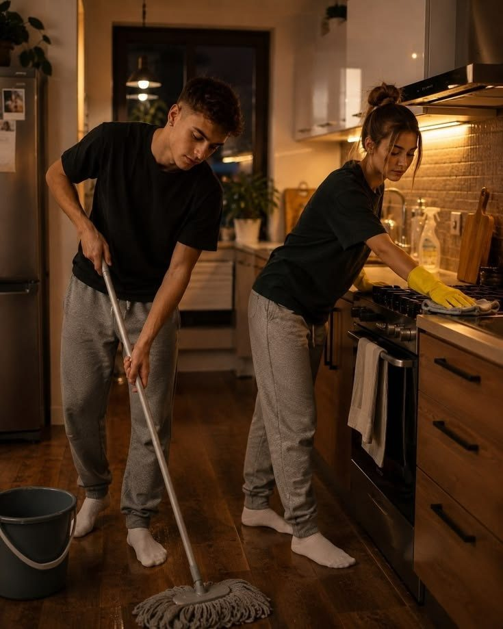

O que vem no pacote
Tudo o que você recebe
Material principal
Guia das Conversas que Funcionam
PDF com 19 capítulos, do básico à prática: como começar, pedir, pausar, escutar, pedir desculpas e se reaproximar.
Para usar na hora
Frases prontas por situação
Dezenas de frases para abrir um assunto, recusar com carinho, pedir desculpas, falar de dinheiro, família, tempo juntos e mais.

Prática
Fichas e exercícios para imprimir
Registro de conversa difícil, termômetro da comunicação, ficha da reunião semanal e mapa dos seus gatilhos.

Material extra
Capítulo para qualquer desafio
10 situações fora do comum (briga feia, quebra de confiança, crise financeira, luto, pós-parto e outras), com o que fazer, o que dizer e quando buscar ajuda.
Para se aproximar
40 perguntas para conversar a dois
Perguntas em quatro níveis, das leves às mais profundas, para reabrir a curiosidade entre vocês.